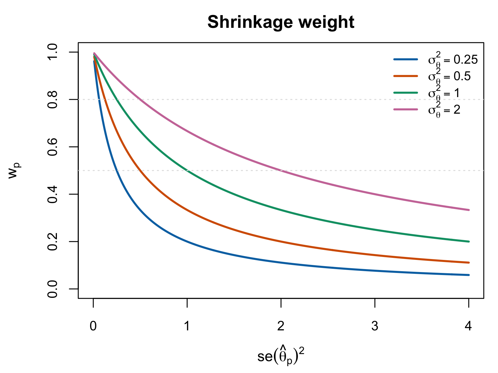
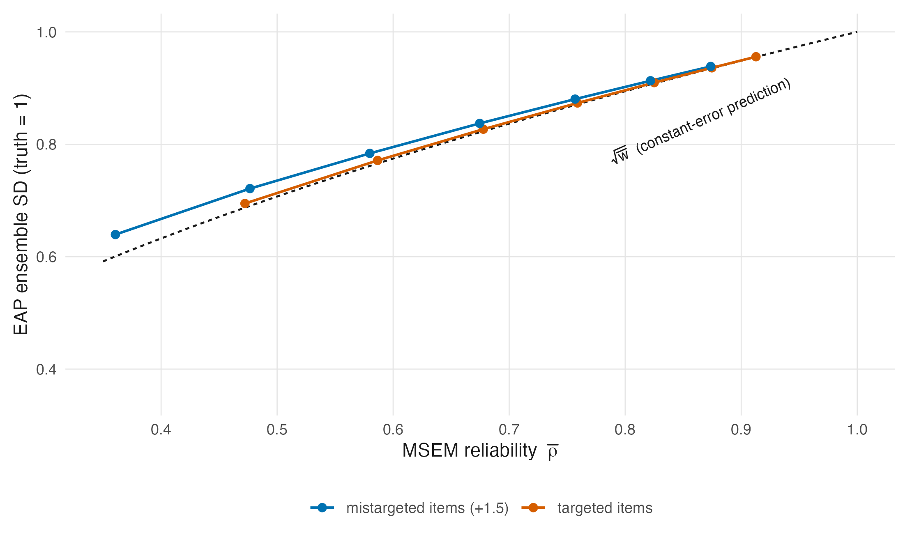
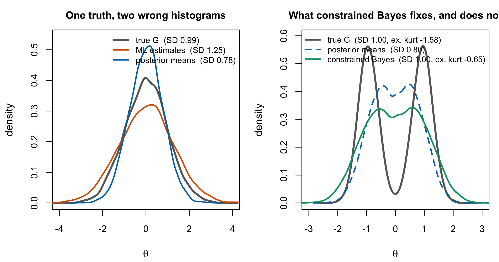

11 The Conditional Posterior and Shrinkage
Chapter 10 wrote the model. This chapter takes one person out of it and asks what the data say about them. The answer — a posterior that is a compromise between the person’s own responses and the population they were drawn from — is the shrinkage estimator, and deriving it properly does three jobs at once: it produces the EAP estimator of Section 6.1 from first principles, it settles what “the variance of \(\theta_p\)” means, which Reviewer 2 correctly noted is framework-dependent, and it exposes the defect that the whole of Part VI exists to repair.
11.1 The conditional posterior
Condition Equation 10.4 on the item parameters and hyperparameters and look at a single person. What remains is
\[ p(\theta_p \mid \mathbf{u}_p; \boldsymbol\beta, \boldsymbol\delta) = \frac{L(\theta_p, \boldsymbol\beta \mid \mathbf{u}_p)\, g(\theta_p \mid \boldsymbol\delta)} {\int L(t, \boldsymbol\beta \mid \mathbf{u}_p)\, g(t \mid \boldsymbol\delta)\,dt}, \tag{11.1}\]
with \(L\) the person likelihood of Equation 3.3. Local independence (Section 3.2) does the work here: Equation 11.1 depends on the other \(P-1\) people only through \(\boldsymbol\beta\), so once the items are settled every person’s posterior is a separate one-dimensional problem. That is the structural fact that makes person scoring cheap, and it is also the fact that makes the ensemble problem of Section 11.7 invisible if you only ever look at one person at a time.
Equation 11.1 has no closed form. The Rasch likelihood is logistic and the prior is Gaussian; the product is neither, and the normalizing integral is evaluated by quadrature, Laplace approximation, or MCMC. Everything analytic below is therefore about an approximation to Equation 11.1, and saying so once loudly is better than hedging in every subsequent sentence.
11.2 The normal working model
Replace the person likelihood by a Gaussian centred at the ML estimate with the curvature the likelihood actually has at its maximum:
\[ L(\theta_p \mid \mathbf{u}_p) \;\propto\; \exp\!\left\{-\frac{(\theta_p - \hat\theta_p)^2} {2\,\operatorname{se}(\hat\theta_p)^2}\right\}, \qquad \operatorname{se}(\hat\theta_p)^2 = \mathcal{J}(\hat\theta_p)^{-1} . \tag{11.2}\]
This is the second-order Taylor expansion of the log-likelihood at \(\hat\theta_p\), and it is the same asymptotic statement as Equation 7.2. Its quality is not uniform.
It is good when the test is long, the person is near the centre of the item difficulties, and the score is interior. It degrades when any of those fails: the Rasch person likelihood is skewed for extreme scores, and Section 6.4 showed it has no maximum at all at a perfect or zero score, so Equation 11.2 does not merely approximate badly there — it does not exist. The exact posterior Equation 11.1 is perfectly well-behaved in that case, because the prior supplies the tail the likelihood lacks. This asymmetry is worth holding onto: the approximation fails exactly where the Bayesian machinery is most useful.
Since the entire shrinkage algebra below rests on Equation 11.2, every result in Section 11.3 and Section 11.4 is exact for the working model and approximate for the Rasch model. The distinction was blurred in the Appendix C draft and is recorded as C-006.
11.3 Normal–normal conjugacy
Theorem 11.1 EAP as a shrinkage estimator. Adapted from Louis (1984, § 2.1); proved inline in this notation
Under the working likelihood Equation 11.2 and the prior \(\theta_p \sim N(\mu_\theta, \sigma^2_\theta)\), the posterior is Gaussian with
\[ \operatorname{E}(\theta_p \mid \mathbf{u}_p) = w_p\,\hat\theta_p + (1-w_p)\,\mu_\theta, \qquad w_p = \frac{\sigma^2_\theta}{\sigma^2_\theta + \operatorname{se}(\hat\theta_p)^2}, \tag{11.3}\]
and
\[ \operatorname{Var}(\theta_p \mid \mathbf{u}_p) = \left(\mathcal{J}(\hat\theta_p) + \sigma^{-2}_\theta\right)^{-1} = w_p \operatorname{se}(\hat\theta_p)^2 = (1-w_p)\,\sigma^2_\theta . \tag{11.4}\]
Proof. Write the log of the product of Equation 11.2 and the prior, collect the quadratic and linear terms in \(\theta_p\), and complete the square. With likelihood precision \(\tau_L = \operatorname{se}(\hat\theta_p)^{-2}\) and prior precision \(\tau_\pi = \sigma^{-2}_\theta\), the posterior precision is \(\tau_L + \tau_\pi\) and the posterior mean is the precision-weighted average \((\tau_L\hat\theta_p + \tau_\pi\mu_\theta)/(\tau_L + \tau_\pi)\). Dividing numerator and denominator by \(\tau_L + \tau_\pi\) and substituting gives Equation 11.3; the two right-hand forms in Equation 11.4 follow by substituting \(w_p\). ∎
The precision reading is the one to keep. Precisions add, and the posterior mean weights each source by the precision it brings. Nothing in Theorem 11.1 is specific to psychometrics — it is the same algebra that produces the Kalman filter and the random-effects estimator, and Chapter 12 is about that fact.
11.4 Limits, and the reliability connection
Limiting behaviour. These are elementary consequences of Theorem 11.1.
As \(\operatorname{se}(\hat\theta_p)^2 \to 0\), \(w_p \to 1\) and the EAP converges to \(\hat\theta_p\): a perfectly informative test needs no prior. As \(\operatorname{se} (\hat\theta_p)^2 \to \infty\), \(w_p \to 0\) and the EAP converges to \(\mu_\theta\): an uninformative test returns the population mean. As \(\sigma^2_\theta \to \infty\) with \(\operatorname{se}\) fixed, \(w_p \to 1\) and the estimator becomes ML: a prior that asserts nothing does nothing.
These are one-line limits and are not claimed as anything more; the Appendix E draft marked them as awaiting a prior-art search, and the search is unnecessary because there is no result here to attribute.
The third limit is the one worth pausing on. It says the Bayesian and frequentist estimators are not two philosophies but two ends of a continuum indexed by \(\sigma^2_\theta\), and Section 10.5 already made the corresponding point about the model. What sits at neither end is the interesting case, and where it sits is decided by \(w_p\). This is the local normal-working shrinkage weight for person \(p\), and it is analogous to reliability rather than identical to the ensemble coefficient. As Section 8.4 showed, \(P^{-1}\sum_p w_p \ge \bar w\), with equality only under constant working error variance; exact Rasch EAP weights need not have the closed form used here. Figure 11.1 plots the local working quantity.

11.5 The posterior variance is smaller, and that is not a free lunch
Equation 11.4 says the posterior variance is below both the prior variance \(\sigma^2_\theta\) and the sampling variance \(\operatorname{se}(\hat\theta_p)^2\), by factors \((1-w_p)\) and \(w_p\) respectively. It is tempting to read this as the Bayesian estimator being more precise for free. Three things block that reading.
It answers a different question. \(\operatorname{se}(\hat\theta_p)^2\) is the sampling variance of an estimator around a fixed \(\theta_p\); Equation 11.4 is the spread of a posterior around its own mean. These are not competing answers to one question (Section 11.6).
It is bought with bias. The EAP is biased toward \(\mu_\theta\) by \((1-w_p)(\mu_\theta - \theta_p)\) under the working model, and the trade is favourable in mean squared error precisely because squared-error loss is what the posterior mean minimizes. Change the loss and the trade changes sign, which is the argument of Chapter 17.
It conditions on whatever was plugged in. Equation 11.4 conditions on \(\boldsymbol\beta\) and \(\boldsymbol\delta\). In empirical Bayes both are estimated, so the reported conditional posterior omits uncertainty in those estimates — the same omitted source Proposition 6.1 records for the frequentist standard error, arriving by a different route. This does not imply a pointwise ordering between the plug-in variance and the full posterior variance; C-012 covers the scope, and Section 11.8 gives the identity.
11.6 What “the variance of \(\theta_p\)” means
Reviewer 2’s fourth bullet asked what variance is meant when the paper writes \(\operatorname{Var}(\theta_p)\). The honest answer is that three different quantities have been called that, and which one is meant depends on the framework.
Under the frequentist reading, \(\theta_p\) is a fixed unknown constant. It has no variance. What has a variance is the estimator, and \(\operatorname{se}(\hat\theta_p)^2 = \operatorname{Var}(\hat\theta_p \mid \theta_p)\) is a within-person sampling variance. The population variance \(\sigma^2_\theta = \operatorname{Var}_G(\theta_p)\) also exists, but it describes the spread of true abilities across people and says nothing about uncertainty in any particular one.
Under the Bayesian reading, \(\theta_p\) is random and has three relevant variances: the prior variance \(\sigma^2_\theta\), the posterior variance Equation 11.4, and — for predicting new responses — the posterior predictive variance, which adds the Bernoulli noise back in.
The reconciliation is not that the frameworks agree, and pretending they do is the error worth avoiding. It is that the same symbol plays the same algebraic role while denoting different things: \(\sigma^2_\theta\) is a structural population parameter to be estimated in one and a prior hyperparameter to be integrated over in the other, and Equation 11.3 is the same formula in both because the algebra does not care. Section 2.4 tabulates the correspondence.
What follows practically is a naming rule the rest of this book obeys. \(\operatorname{se}(\hat\theta_p)^2\) is never called “the variance of \(\theta_p\)”; \(\sigma^2_\theta\) is called the between-person variance; and Equation 11.4 is called the posterior variance and is never compared directly with \(\operatorname{se} (\hat\theta_p)^2\) as though one were a better version of the other.
11.7 The ensemble is wrong in both directions
Everything so far has been about one person, and everything so far has been reassuring. Now put the estimates side by side.
Proposition 11.1 Neither ensemble has the right spread. Adapted from Louis (1984, § 2.1); the law-of- total-variance and constant-error algebra are given inline
Let \(\theta_p \sim G\) with variance \(\sigma^2_\theta\). Then
\[ \operatorname{Var}\!\left(\operatorname{E}[\theta_p \mid \mathbf{u}_p]\right) = \sigma^2_\theta - \operatorname{E}\!\left[\operatorname{Var}(\theta_p \mid \mathbf{u}_p) \right] \;<\; \sigma^2_\theta \tag{11.5}\]
for any prior and likelihood with \(\operatorname{Var}(\theta_p \mid \mathbf{u}_p) > 0\), and under the working model with constant \(\operatorname{se}^2\) the under-dispersion is exactly the reliability:
\[ \operatorname{Var}(\hat\theta^{\mathrm{EAP}}) = \bar w\,\sigma^2_\theta, \qquad \frac{\operatorname{SD}(\hat\theta^{\mathrm{EAP}})}{\sigma_\theta} = \sqrt{\bar w} . \tag{11.6}\]
Meanwhile Equation 8.4 gives \(\operatorname{Var}(\hat\theta^{\mathrm{ML}}) = \sigma^2_\theta + \mathrm{MSEM} > \sigma^2_\theta\).
Proof. Equation 11.5 is the law of total variance, \(\operatorname{Var}(\theta) = \operatorname{Var}(\operatorname{E}[\theta \mid \mathbf{u}]) + \operatorname{E}[\operatorname{Var}(\theta \mid \mathbf{u})]\), rearranged. For Equation 11.6, \(\hat\theta^{\mathrm{EAP}} = \bar w\hat\theta^{\mathrm{ML}} + (1-\bar w)\mu_\theta\) has variance \(\bar w^2(\sigma^2_\theta + \operatorname{se}^2) = \bar w^2\sigma^2_\theta/\bar w = \bar w\sigma^2_\theta\), using \(\sigma^2_\theta + \operatorname{se}^2 = \sigma^2_\theta/\bar w\). ∎
Equation 11.6 is worth reading slowly, because it converts an abstract worry into a number. At \(\bar w = 0.5\) the histogram of posterior means has \(\sqrt{0.5} = 71\%\) of the true standard deviation. At \(\bar w = 0.9\) it has \(95\%\). The reliability levels of Section 9.4 are exactly the levels at which this ranges from severe to mild, which is why the companion simulation varies reliability rather than fixing it.
It is equally worth remembering what Equation 11.6 is: an identity of the constant-error working model, not of the Rasch model. Under exact Rasch posteriors the error variance moves with \(\theta\), the two averages of Section 8.6 part company, and the realized ensemble contraction is \(\sqrt{\bar w}\) only approximately. Figure 11.2 computes the exact version across designs and shows the rule holding closely when items are targeted and separating visibly when they are not — with the direction of the separation a property of the design rather than of the model. Sentences elsewhere in this book that lean on \(\sqrt{\bar w}\) carry this qualification implicitly, and Chapter 13 states it again where it matters most.


Figure 11.3 shows both failures on one set of simulated data. The point is not that one estimator is bad. Each is optimal for what it was built for: ML is unbiased for a fixed \(\theta_p\) up to \(O(I^{-1})\), and the EAP minimizes squared-error loss person by person. The point is that optimality for each person separately does not deliver optimality for the ensemble, and there is no reason it should — a criterion summed over persons is not the same criterion as one applied to the collection.
Louis (1984) is where this was first taken seriously as a problem to be fixed rather than a curiosity, in the compound Gaussian setting: posterior expectations “produce ensembles of estimates with a sample variance smaller than the posterior expected sample variance for parameters,” and the repair is to weight the data by approximately the square root of the posterior-expectation weight. That constant is not arbitrary and falls straight out of Equation 11.6: an estimator \(a\hat\theta^{\mathrm{ML}} + (1-a)\mu_\theta\) has ensemble variance \(a^2\sigma^2_\theta/\bar w\), which equals \(\sigma^2_\theta\) exactly when \(a = \sqrt{\bar w}\). Chapter 18 develops this as constrained Bayes; Chapter 19 goes further and matches the whole distribution rather than its first two moments.
Rank estimation is a second ensemble question, but not an automatic second failure in the common-form IRT model. A positive monotone rescaling cannot change an existing ordering; whether the posterior-mean ordering is itself wrong depends on stochastic ordering of the person posteriors. Chapter 12 shows that fixed-item Rasch posteriors satisfy that ordering, while heterogeneous designs and shared parameter uncertainty require a separate analysis. That conditional question, rather than non-constant information by itself, is what Chapter 20 must resolve.
11.8 Empirical Bayes and full Bayes
Everything above conditioned on \((\boldsymbol\beta, \boldsymbol\delta)\). Two ways of discharging that conditioning are in use.
Empirical Bayes estimates them — typically \(\hat{\boldsymbol\beta}\) and \(\hat{\boldsymbol\delta}\) from marginal maximum likelihood — and substitutes. The resulting estimator has the form Equation 11.3 with hats, is justified by minimizing expected squared error under the assumed population model rather than by any Bayesian argument, and is what a great deal of software returns.
Full Bayes places hyperpriors and integrates, as in Equation 10.4. The person-level posterior is then the marginal posterior of \(\theta_p\), having averaged over the hyperparameters.
What empirical Bayes omits is uncertainty in what it plugs in. Under full Bayes,
\[ \operatorname{Var}(\theta_p\mid\mathbf u)= \operatorname{E}\!\left[\operatorname{Var}(\theta_p\mid\mathbf u, \boldsymbol\delta)\mid\mathbf u\right] +\operatorname{Var}\!\left(\operatorname{E}[\theta_p\mid\mathbf u, \boldsymbol\delta]\mid\mathbf u\right). \tag{11.7}\]
The second term is nonnegative, but this identity compares the full variance with an average conditional variance. It does not order the arbitrary plug-in value \(\operatorname{Var}(\theta_p\mid\mathbf u,\hat{\boldsymbol\delta})\) against that average; the plug-in value can lie above or below it. The size and direction of the numerical difference are model- and data-dependent. Chapter 16 returns to the larger uncertainty object when \(\boldsymbol\delta\) includes a distribution.
11.9 Sources and provenance
Equation 11.1, Equation 11.2, Theorem 11.1 and Equation 11.4 follow the Appendix E draft §§ E.2–E.4, which derives them in this notation; the completing-the-square proof is standard normal–normal conjugacy and is restated rather than attributed, since it predates the psychometric literature entirely. Bock and Mislevy (1982) is the standard psychometric reference for EAP scoring by quadrature.
The limits in Section 11.4 are elementary. The Appendix E draft flagged that block as needing a prior-art search; none is required, because taking three limits of Equation 11.3 is prose rather than a numbered result.
The framework-dependence discussion of Section 11.6 is the Appendix E draft § E.5, sharpened on one point: the draft’s table lists the frequentist interpretation of \(\sigma^2_\theta\) as “population variance” and the Bayesian as “prior variance” without saying that under the strict frequentist reading \(\theta_p\) has no variance at all. That is the sentence Reviewer 2’s question actually needs, and it is added here.
Proposition 11.1 splits its provenance deliberately. Equation 11.5 is the law of total variance and Equation 11.6 is two lines of algebra; both are derived here and neither is claimed. What is Louis’s (1984) is the framing — that an ensemble of estimates is a thing one might want to be right, that posterior means are systematically not, and that the fix weights the data by roughly the square root of the posterior weight. The abstract states the under-dispersion and the square-root weight directly; both were read there and the square-root constant was then re-derived here from Equation 11.6, which is why it appears as an identity rather than an approximation in the constant-error case.
Figure 11.1 and Figure 11.3 are generated in code/R/09-figures.R and were introduced in Chapter 1; both are illustrative, both fix a seed, and nothing in this chapter rests on either beyond what the algebra already establishes. Figure 11.2 is exact quadrature over Rasch score classes, added in this edition (code/R/23-figures-v2-theory.R, values frozen in tables/F-shrink-deviation-summary.rds); it exists to keep Equation 11.6 honest about its working-model status, and no inference rests on it beyond the existence and design-dependence of the gap it displays.